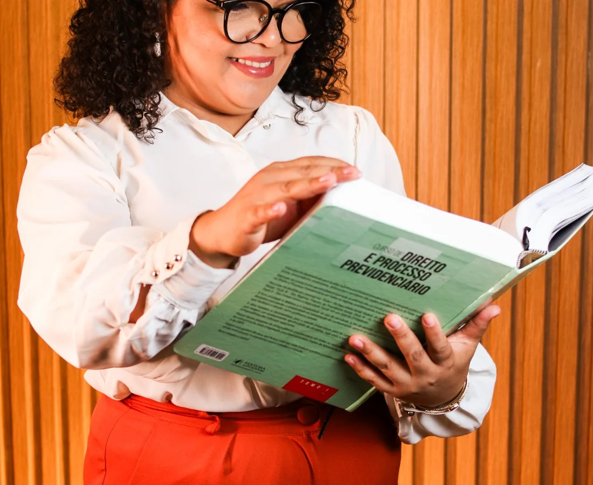

Quero organizar
meu futuro.
Planejamento previdenciário para quem deseja conhecer todas as possibilidades antes de tomar uma decisão.
→Em momentos importantes da vida, compreender todas as possibilidades faz toda a diferença.
No escritório Simone Silva Advocacia, acreditamos que nenhuma mulher deveria tomar uma decisão sobre aposentadoria, planejamento previdenciário ou benefícios do INSS sem antes entender seus direitos, suas opções e os caminhos disponíveis.
Porque informação gera segurança.
E segurança permite decidir com tranquilidade.
Toda fase da vida traz decisões diferentes.
Estamos aqui para ajudar você a compreender seus direitos, conhecer suas possibilidades e escolher o caminho que faz mais sentido para a sua realidade.
Planejamento previdenciário para quem deseja conhecer todas as possibilidades antes de tomar uma decisão.
→Aposentadorias, auxílio por incapacidade, auxílio-acidente, salário-maternidade, pensão por morte, BPC/LOAS e outros benefícios previdenciários.
→Quando um benefício é negado ou concedido de forma incorreta, avaliamos se existe um caminho para buscar a revisão.
→Nem toda dúvida precisa começar com um processo. Às vezes, começa com uma boa orientação.
→A advocacia faz parte do nosso trabalho.
O cuidado faz parte da nossa cultura.
O escritório Simone Silva Advocacia nasceu da convicção de que toda mulher merece compreender as possibilidades que tem antes de decidir.
Mais do que prestar serviços jurídicos, queremos construir relações baseadas em confiança, conhecimento e segurança.
Nossa atuação une técnica jurídica, atendimento humanizado e uma cultura voltada para o acolhimento.
Advogada Previdenciária.
Fundadora do escritório Simone Silva Advocacia.
Especialista em Direito Previdenciário.
Ao longo de sua atuação, escolheu dedicar sua carreira a ajudar mulheres a compreender seus direitos e tomar decisões mais seguras sobre o próprio futuro.
Acreditamos que toda mulher merece compreender as possibilidades que tem antes de decidir.
Por isso, nosso compromisso vai além da advocacia.
Estamos aqui para explicar, orientar e apresentar caminhos, para que cada mulher possa decidir com autonomia e segurança.
Porque conhecimento transforma decisões.
O planejamento previdenciário permite enxergar caminhos que muitas vezes passam despercebidos.
Ele mostra quando aposentar, como aposentar, qual regra utilizar, quais escolhas fazem sentido para a sua realidade e quais decisões podem ser tomadas hoje para proteger o futuro.
Mais do que calcular uma aposentadoria, planejamos possibilidades.
Para que possamos aproveitar melhor o tempo do atendimento, nossa equipe poderá solicitar previamente algumas informações e documentos relacionados ao seu caso.
Esse preparo permite que a conversa seja mais objetiva e que a análise comece com muito mais clareza.
Informação clara também faz parte de um atendimento seguro.
Não. Muitas pessoas chegam ao escritório sem saber exatamente qual benefício corresponde à sua situação. O primeiro passo é compreender sua história, analisar os documentos disponíveis e identificar quais caminhos podem ser considerados.
A comunicação e a experiência do escritório foram construídas especialmente para mulheres. No entanto, a possibilidade de atendimento a outros públicos poderá ser avaliada conforme a natureza do caso.
Não. Os atendimentos podem ser realizados de forma presencial em Teresina/PI ou remotamente, permitindo o acompanhamento de clientes de outras cidades e estados.
Sim. Em muitos casos, buscar orientação antes do requerimento é importante para organizar documentos, verificar informações e compreender as possibilidades existentes antes de tomar uma decisão.
Não. Nenhum profissional pode garantir previamente o resultado de um pedido administrativo ou de um processo judicial. O compromisso do escritório é oferecer uma análise técnica, transparente e individualizada, explicando os caminhos possíveis, os riscos e as etapas do atendimento.
Os documentos variam conforme cada situação. Antes do atendimento, nossa equipe poderá entrar em contato para solicitar as informações e os documentos importantes para a análise inicial do seu caso. Dessa forma, você já chega ao atendimento com a documentação necessária, permitindo uma conversa mais objetiva, organizada e proveitosa. Caso seja necessário complementar algum documento posteriormente, você será orientada durante o atendimento.
O primeiro atendimento é o momento de compreender sua realidade, conhecer sua dúvida e identificar quais caminhos podem ser considerados. Para que esse encontro seja mais produtivo, nossa equipe poderá solicitar previamente algumas informações e documentos relacionados ao seu caso. Assim, dedicamos menos tempo à coleta de dados e mais tempo à análise, aos esclarecimentos e à construção da melhor estratégia para a sua situação. Somente após essa conversa será possível indicar os próximos passos e explicar como o escritório poderá atuar.
O agendamento poderá ser feito pelo botão Conversar, pelo WhatsApp disponível no site ou pelos demais canais oficiais do escritório. Antes da confirmação, você receberá as informações necessárias sobre o atendimento.
Cada história é única. Por isso, o primeiro passo é compreender a sua realidade antes de indicar qualquer caminho.